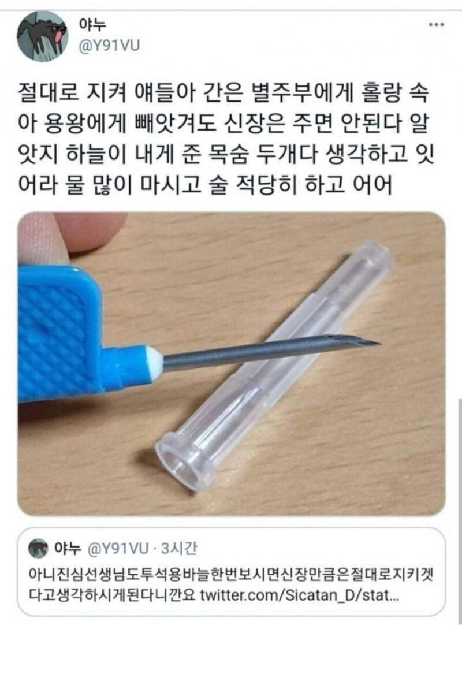
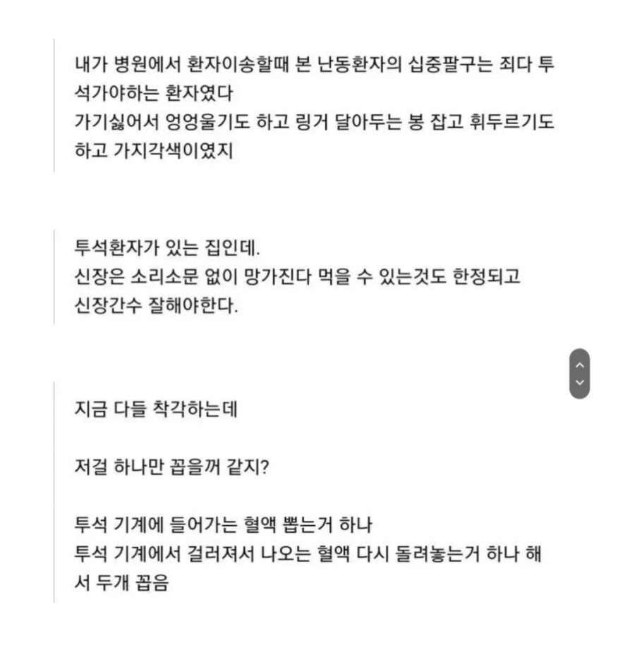

다들 물많이마시고 먹는거 관리하자..


다들 물많이마시고 먹는거 관리하자..
마운자로가 신장기능은 안살려주냐
GLP1 신장에도 효과 있음 ㅇㅇ
보통 SGLT2를 처방 많이함
와 바늘 시발
내장은 한번 손상되면 회복되지 않기에 관리 잘해야 하지..이걸 알았다면 초6때 신장염에 걸리지도 않았을텐데;그래도 그후에 고기를 끊어서 다행이구만.
고기를 과하게 먹는거 아니면 끊을 필요는 없...
보통은 고기가 문제가아닌디 .. 뭐지?? 내가 모르는 무언가가있나
고맙다 방금 한달만에 맥주 한캔에 육개장 하나 먹었는데 그러지 말 걸 그랬다
내일 부터 운동한다.
내가 이래서 저녁 먹자마자 꼭 2~30분 걸음
민턴치러가는 날은 어차피 소식하니까 괜찮을 것 같아서 걷기는 생략함
배고프다고 너구리 2개 낋이묵고 가면 게임 개판치고 클럽횐들한테 욕 오지게 얻어먹어서 배 더부룩해짐
ㅋㅋㅋㅋㅋㅋㅋ 욕먹어서 배부름ㅋㅋㅋㅋ
안그래도 더부룩한데 욕까지 먹어 체할 지경
너구리 2개 ㄴㄴ 이제 스낵면 ㅇㅋ
빨리 미래 의학기술이 발달해서 고통받는 사람들이 해방 됐음 좋겠다
신장이식밖에 답이없음
근데 그것도 위험한 수술이고 평생 면역 낮추는 약 먹어야됨
그래도 투석환자들은 신장이식을 원함 투석이 너무 힘들어서
간 췌장보다는 잘이식되고 예후도 좋음
신장이식하면 원래있던 고장난 신장 내비두고, 기증된 신장을 아랫배 왼쪽이나 오른쪽에 이식함
고장난거 잘라내지는 못함?
너무무섭다ㅠ
조만간 기증 등록 해야겠다.
프로틴약 많이먹으면 신장 고장난다고함
ㄹㅇ임??
걍 건강식으로 잘 챙겨먹어 유튜브 헬창들 무슨무슨 파우더! 영양제 이딴거 안먹어도 됨 너 올림피아 나갈거 아니잖아
배달음식 위주의 식습관이 신장기능 악화를 부름
특히 자취하면서 집 음식 만들어먹지 않고 꾸준히 배달음식만 시켜먹는 1인가구들 많은데
이런 사람은 생애주기중 투석을 경험할 확률이 매우 높음
결국 다 유전이더라
창 아니냐
나다 투석하는 놈... 젊으면 저정도는 아님...
투석 끝나고 직후는 좀 힘이 빠지는데 나머지 시간은 저정도는 아님... 물론 좀 대인관계 위축 같은데 될순 있는데 직장 다니고 애키우고 친구만나고 잘 살고 있다 다행히
아 나는 당뇨합병증 아니고 신장염에서 출발한거라 좀 다를꺼임
당뇨합병증으로 신부전와서 투석중이면 이미 신체 컨디션이 한참 떨어진거라 저 글과 비슷한 상태일수도 있음
투석 주기가 짧음?
주3회 4시간이 기본
보통 저 기본루틴대로 함
심각하네 ㄷㄷ
혈액투석은 주3회 4시간씩인데
복막투석을 하는 사람은 일3회 하는 경우도 있고
기계를 써서 자는 동안 하는건 8-10시간 동안 하는 경우도 있어
주 3회 4시간 은 누워있는거?
누워있어도 되고 앉아있어도 되는데
나는 그냥 누워서 자장가 틀어놓고 자버림
그게 제일 낫더라
저 굵은 바늘을 수시로 사용하기 때문에
팔에 굵은 동맥 잘라다가 이식하는 수술한 사람 팔을 보면 엄청난 비주얼임
여생을 투석하며 산다는게 얼마나 고통스러울까
헬창들 프로틴 쏟아붓는거나 한약이나 기타 약종류 자주 먹는애들
어린 나이부터 배달음식 위주로 싸구려 음식 사먹는 애들보면 안타깝긴함
나중에 신장 아작나서 고통스럽게 살아갈지도 모를텐데
독소를 배출하는 중요한 장기가 망가지면 순식간에 몸이 아작남
그리고 신장은 한번 망가지면 복구가 안됨
그래서 이식을 하고 싶어도 대기자가 넘쳐나는 상황이니 포기해야겠지?
죽어서 가는게 지옥이 아니야
평생 장애를 안고 사는게 지옥이지
모든 신장병 환자가 관리부재로 인해 발병하는건 아니야. 나처럼 면역질환으로 시작하는 경우도 많아.
당연하지
신장을 보호하려면 물을 많이 마셔야합니다 이때 주의할점은 물을 많이 마시면 신장에 부담을 줄수있다는 점이죠
육고기 많이 먹는편인데
줄여야되나 흠
이거보고 콜라 원샷했다